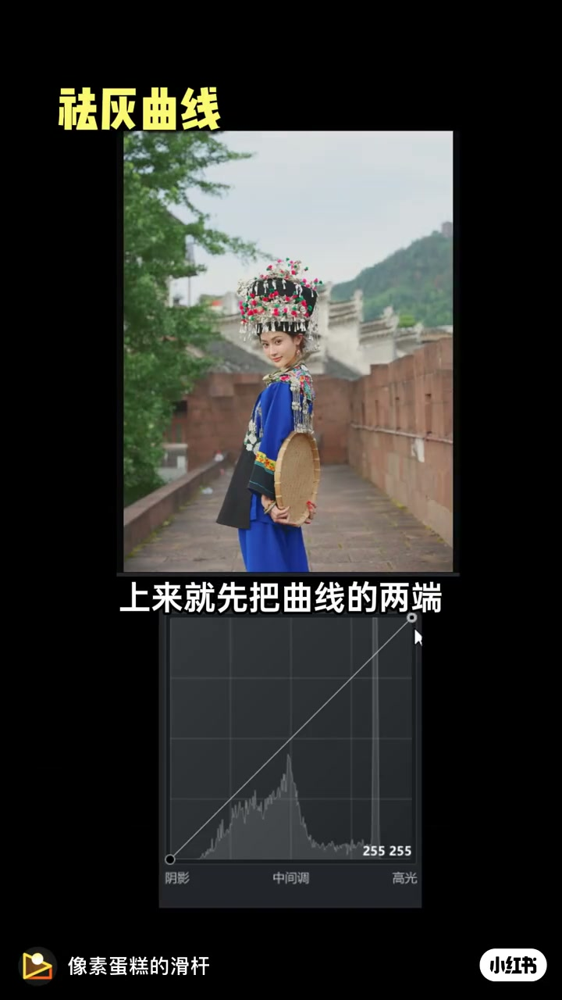
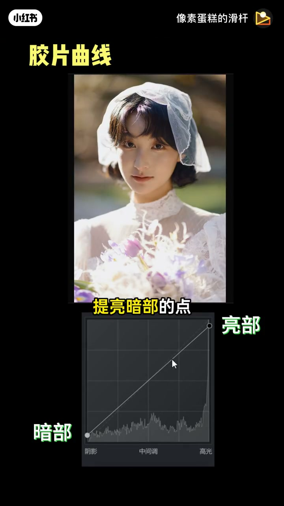
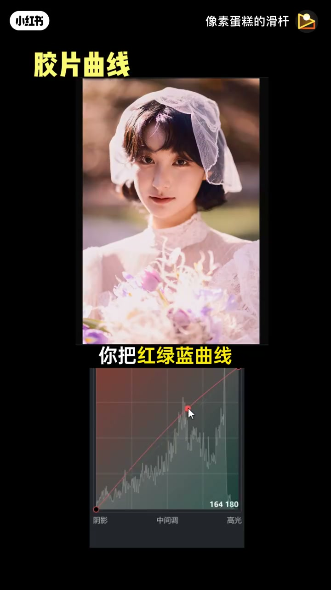
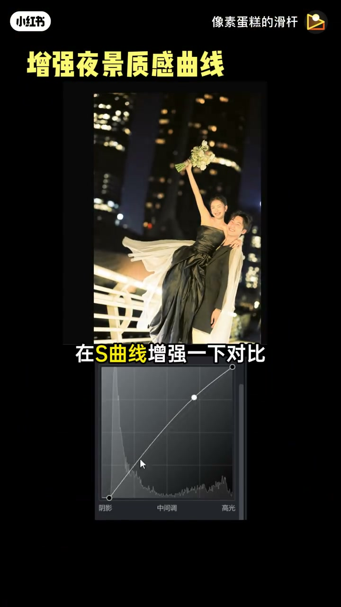
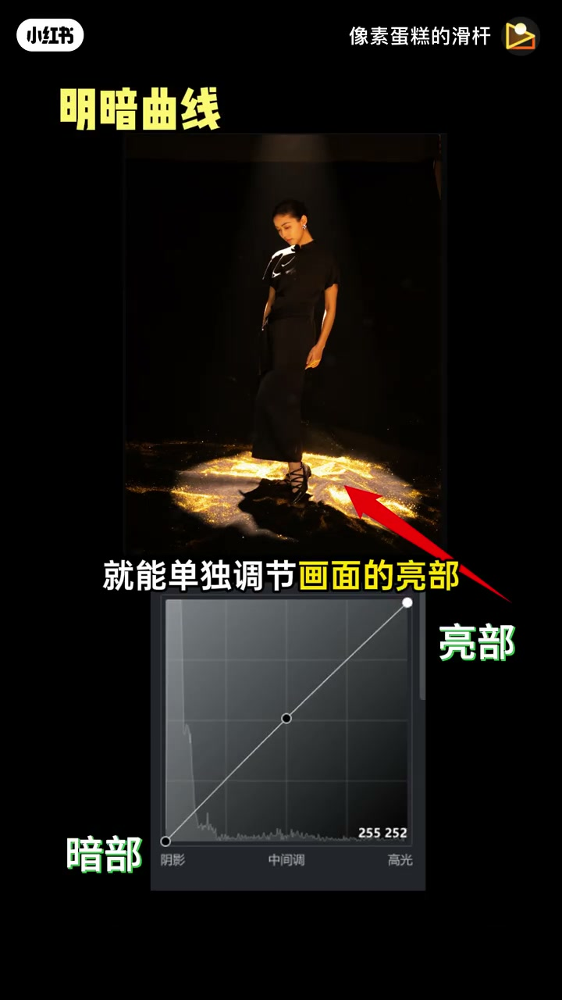
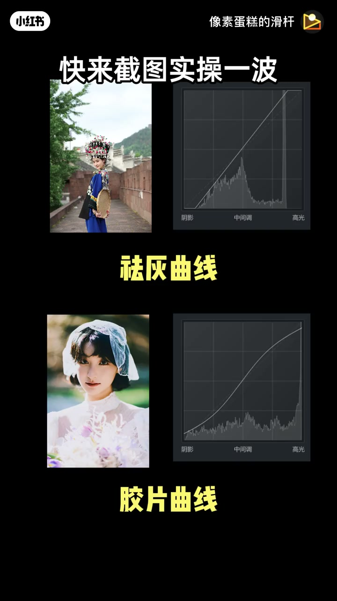

内容要点
像素蛋糕的滑杆用约 46 秒把曲线调色压成可套用的公式：先把曲线两端挪到直方图波峰两侧祛灰；再压亮部、提暗部拉出 S 形做出胶片感；红绿蓝通道分别拉正 S，逼近「柯达金」配方；夜景则压暗部再加 S 增强对比。最后提醒：曲线上加点就能分区单独调亮部或暗部。
知识结构
把曲线两端移到直方图波峰两侧，灰扑扑的杂色先消失。
压亮部点、提暗部点，再用 S 曲线提高对比，做出胶片感。
红绿蓝曲线分别拉出正 S，逼近天价「柯达金」胶卷配方。
暗部压暗 + S 增强对比，城市夜景灯光更有质感。
曲线加点即可单独调亮部或暗部；鼓励截图跟练。
曲线调色可以套公式：两端对齐直方图祛灰 → S 形做胶片对比 → RGB 通道正 S 仿柯达金 → 夜景先压暗再加对比；需要时在曲线上加点分区微调。
00:00-00:09祛灰：两端对齐直方图波峰
开场直说「曲线调色完不明白」：上来先把曲线两端移动到直方图波峰的两侧。灰扑扑的杂色就会先消失——这是后面一切风格化的底座，而不是一上来就染色。
画面演示民族服饰人像与曲线界面：光标指向高光端锚点，暗示把白点往直方图有效范围收拢，拉开灰阶。

00:09-00:23胶片感：压亮提暗 + RGB 正 S
下一步：压低亮部的点、提亮暗部的点，再用 S 曲线提高对比度——胶片感就出来了。若还觉得「胶片味」不够，把红、绿、蓝三条曲线分别拉出正 S 形，作者戏称为炒到天价的「柯达金」胶卷配方。
演示用白纱婚纱人像：曲线暗部抬起做出褪黑/胶片灰底，成片叠黄字「柯达金胶卷配方」。


00:23-00:46夜景压暗 + 曲线加点分区调
若夜景背景不高级：给曲线暗部压暗，再加 S 曲线增强对比，城市夜景灯光更有质感。
收尾强调操作手感：曲线上加一个点，调亮部就只动亮部，调暗部就只动暗部；细节「安排得明明白白」，并号召截图实操、留言调色难题。



完整转录（28段）
以下文本由 Whisper medium 模型自动转录，可能存在少量识别误差，已尽可能修正。
就你曲线调色完不明白是吧
上来就先把曲线的两端
移动到直方图拨风的两侧
灰布布的杂色
这不就消失了
压低亮部的点
提亮暗部的点
然后用S曲线提高对比度
胶片感这不就调出来了
胶片位还不够
你把红绿蓝曲线
再分别拉出正S形
这不就是炒到天价的
科达金胶卷配方吗
什么
你的夜景背景不高级
你给曲线暗部压暗
再S曲线增强一下对比
城市夜景灯光不就有质感了
曲线上加一个点
调节亮部部分
就能单独调节画面的亮部
调节暗部部分
就能单独调节画面的暗部
细节全部给你安排得明明白白
快来截图实操一步
还有什么调色难题
来看看解锁